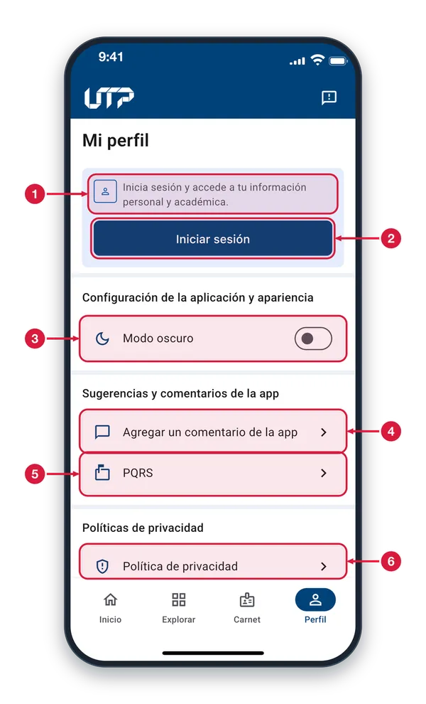
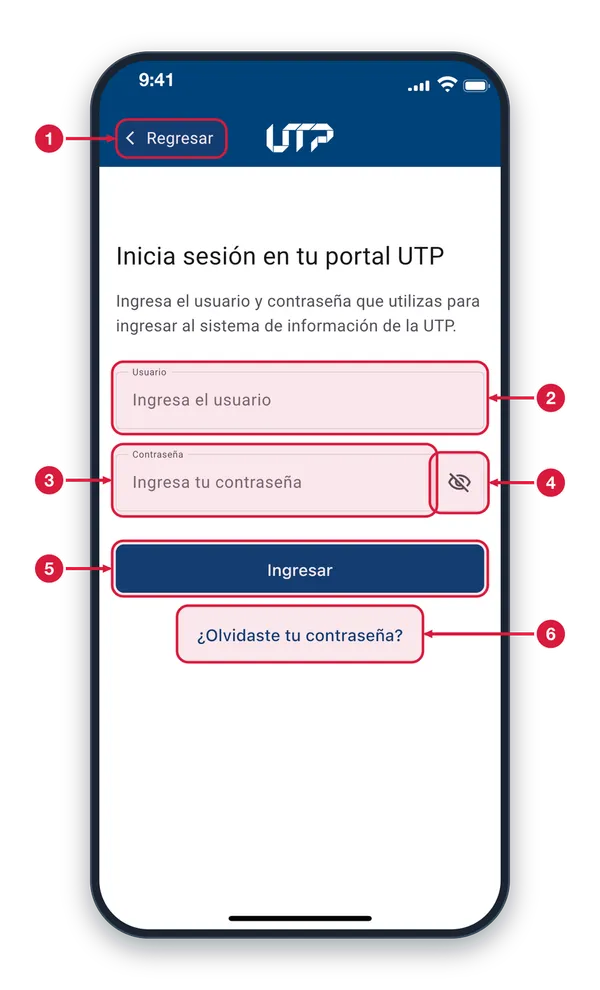
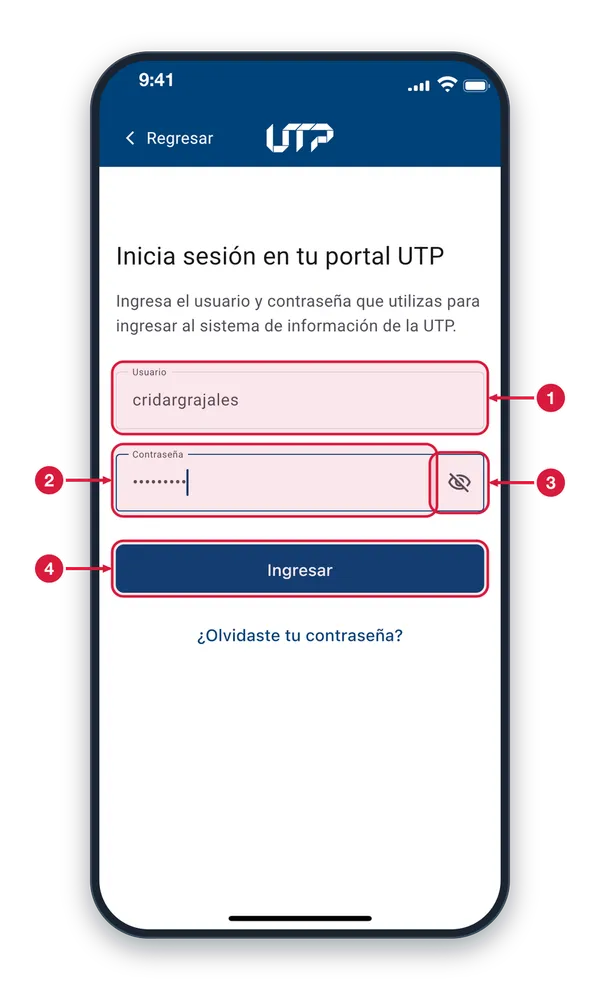
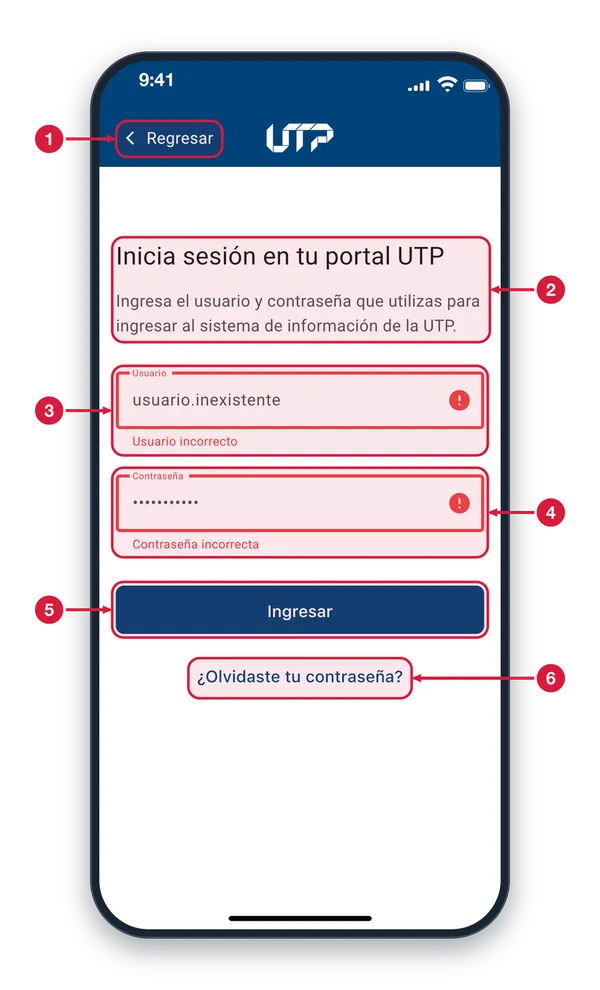
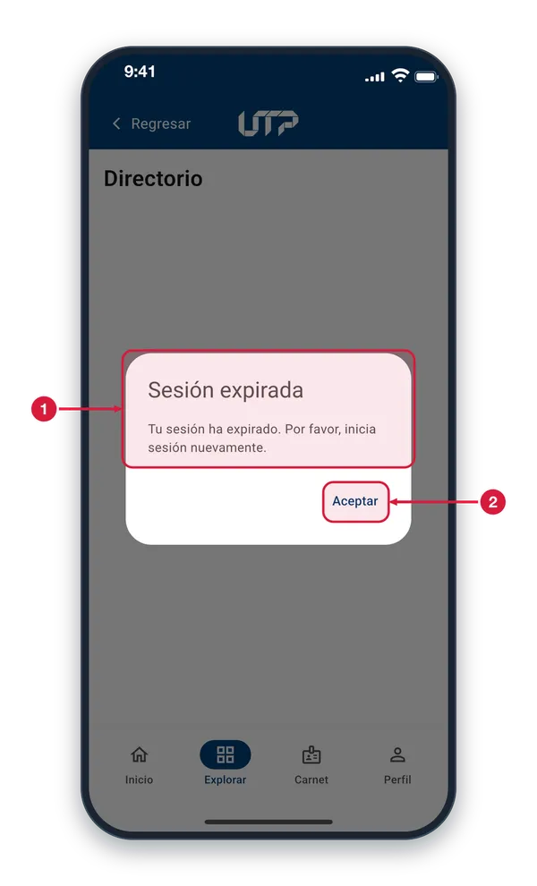
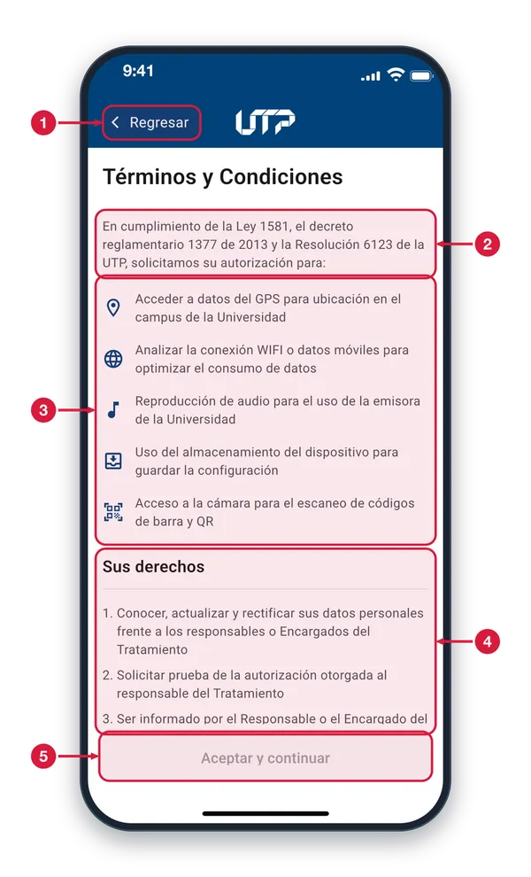
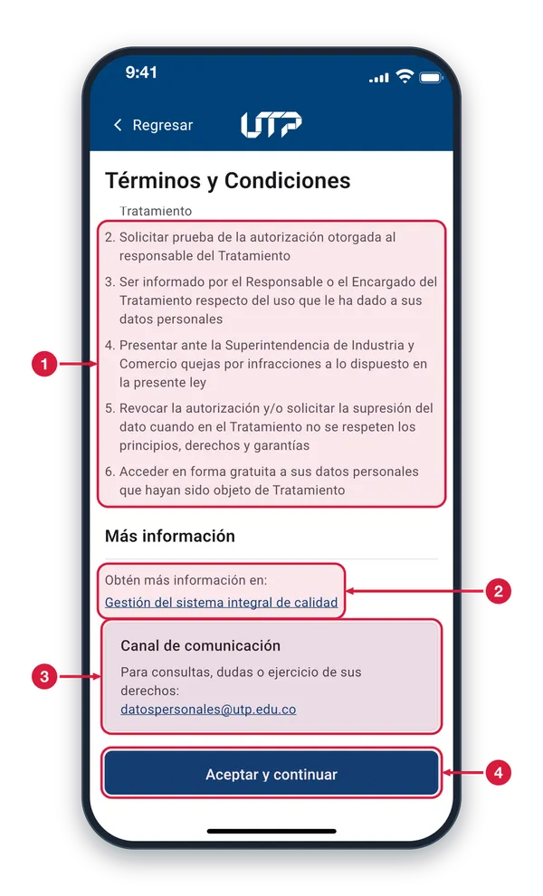

Para acceder a las funciones exclusivas de estudiantes, administrativos y docentes, necesitas iniciar sesión con tus credenciales de la Universidad Tecnológica de Pereira. El proceso es rápido, seguro y protege tu información personal.
Ingresa tu código o documento de identidad
Escribe tu contraseña institucional
Toca el botón «Ingresar»
Si olvidaste tu contraseña, usa el enlace de recuperación
Si los datos son incorrectos, tendrás otros 4 intentos
INICIO DE SESIÓN
Perfil sin sesión iniciada1 de 5
Si no has iniciado sesión, Perfil te invita a entrar y muestra solo las opciones disponibles para visitantes.

Aviso para visitantes Te recuerda que, al iniciar sesión, accedes a tu información personal y académica. Sin sesión, solo ves las opciones generales de esta pantalla.
Iniciar sesión Toca este botón para abrir el formulario donde escribes tu usuario y tu contraseña de la UTP.
Modo oscuro Cambia entre el tema claro y el oscuro. Funciona también sin haber iniciado sesión.
Agregar un comentario Abre Sugerencias para calificar la app y dejar un comentario. Puedes abrirlo sin haber iniciado sesión.
PQRS Abre PQRS UTP, la página de la universidad para presentar peticiones, quejas, reclamos y sugerencias.
Política de privacidad Abre el aviso de privacidad de la universidad dentro de la app, para que lo leas cuando quieras.
Inicia sesión en tu portal UTP2 de 5
Escribe el usuario y la contraseña que usas en el portal de la UTP. Llegas aquí desde Perfil o desde Inicio.

Regresar Cierra el formulario y vuelve a la pantalla anterior, sin iniciar sesión.
Usuario Escribe el mismo usuario que usas en el sistema de información de la UTP. Es obligatorio y no admite espacios.
Contraseña Escribe tu contraseña del sistema de información de la UTP. Es obligatoria y se oculta con puntos mientras escribes.
Mostrar u ocultar Toca el ojo para ver lo que escribiste en la contraseña o volver a ocultarlo.
Ingresar Envía tus datos para entrar. Si falta el usuario o la contraseña, el campo te avisa que es obligatorio. También sirve la tecla de enviar del teclado.
¿Olvidaste tu contraseña? Abre, dentro de la app, la página de la universidad para recuperar tu contraseña (pantalla Recuperar contraseña).
Formulario diligenciado3 de 5
Con usuario y contraseña escritos, toca Ingresar. La primera vez verás antes los Términos y Condiciones.

Usuario escrito Revisa que no tenga errores. Si los datos no corresponden a una cuenta, los campos se marcan en rojo con un aviso.
Contraseña oculta Mientras escribes solo ves puntos. Toca el ojo si quieres comprobar lo que escribiste antes de enviar.
Mostrar u ocultar Alterna entre ver tu contraseña y ocultarla con puntos.
Ingresar Si los datos son correctos, entras a tu cuenta. Si no, un aviso te dice cuántos intentos te quedan: con 5 intentos fallidos el ingreso se bloquea 4 horas.
Inicio de sesión con error4 de 5
Pantalla de inicio de sesión cuando el usuario o la contraseña no coinciden. Se llega con «Inicia sesión» desde Inicio o Perfil.

Regresar Toca «Regresar» para salir del inicio de sesión y volver a la pantalla anterior sin entrar a tu cuenta.
Datos de ingreso Escribe el usuario y la contraseña con los que entras al sistema de información de la UTP, los mismos de tu portal UTP.
Usuario con error El borde rojo, el icono de error y «Usuario incorrecto» indican que el usuario no es válido. El aviso desaparece cuando vuelves a escribir.
Contraseña con error Con datos incorrectos la app marca los dos campos. Si el error es de conexión, no se marca nada ni se gasta un intento.
Ingresar Toca para intentarlo de nuevo. Tienes 5 intentos: cada dato incorrecto descuenta uno y un aviso abajo dice cuántos quedan. Con 0, el ingreso se bloquea 4 horas.
¿Olvidaste tu contraseña? Toca este enlace para abrir, dentro de la app, la página de recuperación de contraseña y seguir sus pasos.
Sesión expirada5 de 5
Aviso que sale encima de cualquier pantalla cuando tu sesión ya no es válida y no se pudo renovar.

Aviso de sesión expirada La app renueva tu sesión sola; este aviso sale cuando el servidor ya no la acepta. La sesión se cierra en el teléfono y el aviso no se cierra tocando fuera.
Aceptar Toca Aceptar para volver a la pantalla principal como visitante. Para seguir con tu cuenta, inicia sesión otra vez.
ACEPTAR TÉRMINOS
Revisa y acepta las condiciones de uso de la app
La primera vez que inicias sesión, la aplicación te presenta los Términos y Condiciones de uso. Es un paso obligatorio para continuar. Léelos con atención: describen cómo se manejan tus datos personales y las reglas de uso de los servicios.
Lee detenidamente los términos presentados
Desplázate hasta el final del documento
Toca «Aceptar y continuar» para entrar a la app
Solo se muestra una vez, después del primer inicio de sesión
ACEPTAR TÉRMINOS
Términos y Condiciones1 de 2
La primera vez que inicias sesión debes leer y aceptar estas autorizaciones para poder entrar a tu cuenta.

Regresar Sales sin aceptar: vuelves al formulario de inicio de sesión y no entras a tu cuenta.
Introducción Explica que la UTP te pide autorización según la normativa de protección de datos personales. El texto lo define la universidad y puede actualizarse.
Autorizaciones Lista para qué usa la app tu teléfono: ubicación en el campus, conexión WiFi o datos móviles, audio de la emisora, almacenamiento y cámara para escanear códigos.
Sus derechos Enumera tus derechos como titular de tus datos personales. Desplázate hacia abajo para leerlos todos y llegar hasta el final.
Aceptar y continuar Está desactivado (gris) mientras no llegues al final del texto. Cuando termines de desplazarte se activa.
Final de los términos2 de 2
Al llegar al final del texto se activa «Aceptar y continuar» y ves cómo pedir más información.

Tus derechos Termina la lista de derechos, entre ellos revocar la autorización, pedir que se eliminen tus datos y acceder a ellos gratis.
Más información Toca el enlace para abrir, dentro de la app, la página de la universidad con más información. Usa «Regresar» para volver a los términos.
Canal de comunicación Indica el correo de la universidad para consultas, dudas o para ejercer tus derechos. Al tocar el correo se abre tu aplicación de correo.
Aceptar y continuar Ya está activo (azul). Al tocarlo se registra tu aceptación, se cierran los términos y entras a tu cuenta con la sesión iniciada.